THÔNG TIN PHƯỜNG BA ĐÌNH
Ấn phẩm số · Tháng 12/2026 · Đang mở…
Ấn phẩm số · Tháng 12/2026 · Đang mở…
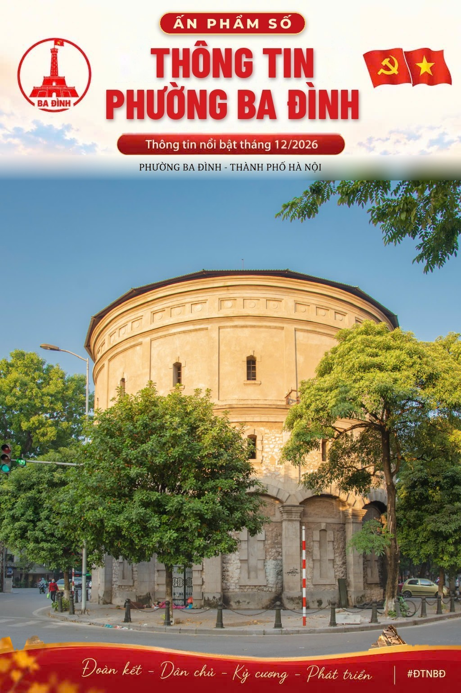
Sáng 14/11, Tổng Bí thư, Chủ tịch nước Tô Lâm dự Ngày hội Đại đoàn kết toàn dân tộc tại liên tổ dân phố số 1, 2, 3, 6 (Cụm 1). Cùng dự có các đồng chí lãnh đạo Đảng, Nhà nước, các ban, bộ, ngành Trung ương và thành phố Hà Nội.
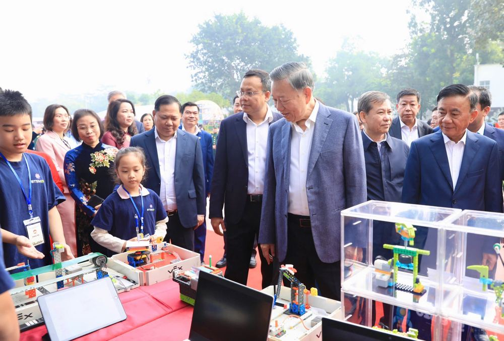
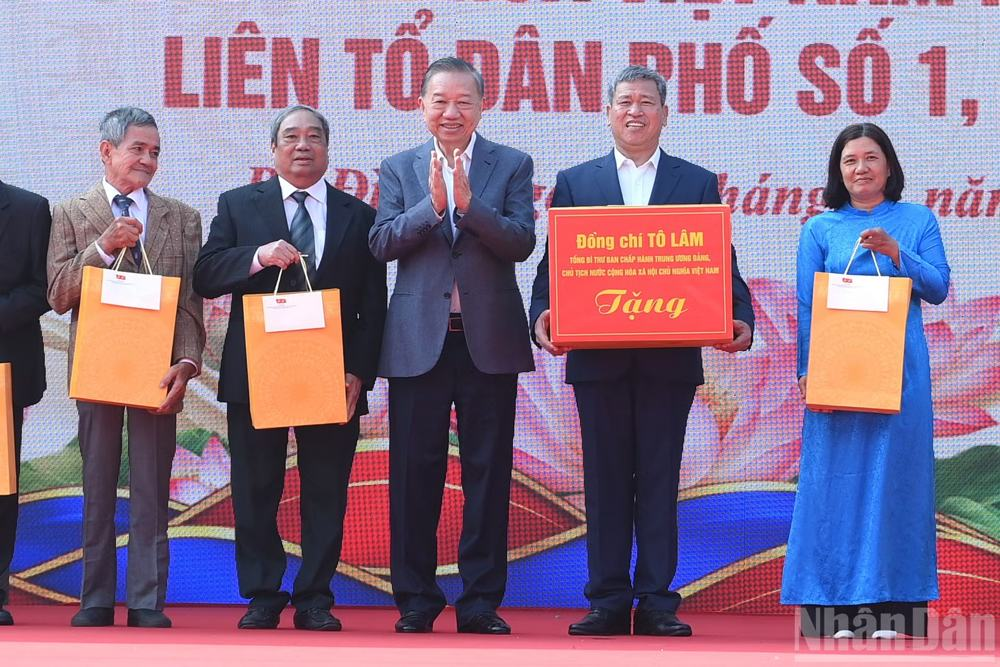
Đoàn kết là một giá trị văn hóa quý báu của dân tộc. Lòng yêu nước, tinh thần nhân ái, trọng nghĩa tình và đạo lý đã gắn bó các thế hệ, tạo nên sức mạnh cộng đồng. Việc gắn Ngày hội Đại đoàn kết toàn dân tộc với Ngày Văn hóa Việt Nam là để bồi đắp những giá trị ấy, để văn hóa củng cố đoàn kết, đoàn kết tạo sức mạnh xây dựng đời sống văn hóa ngày càng tốt đẹp. Cấp ủy, chính quyền, Mặt trận và người dân cần tiếp tục vun đắp tình đoàn kết, xây dựng cộng đồng gắn bó, có trách nhiệm với nhau.
Trong không khí vui tươi của ngày hội, Tổng Bí thư, Chủ tịch nước Tô Lâm cùng các đồng chí lãnh đạo Đảng, Nhà nước và thành phố Hà Nội đã trao quà tặng địa bàn dân cư, các gia đình, cá nhân tiêu biểu và gia đình có hoàn cảnh khó khăn. Dịp này, Ủy ban MTTQ phường ra mắt mô hình điểm “Tổ dân phố 3 Nhất về an ninh, trật tự” tại Tổ dân phố số 1.
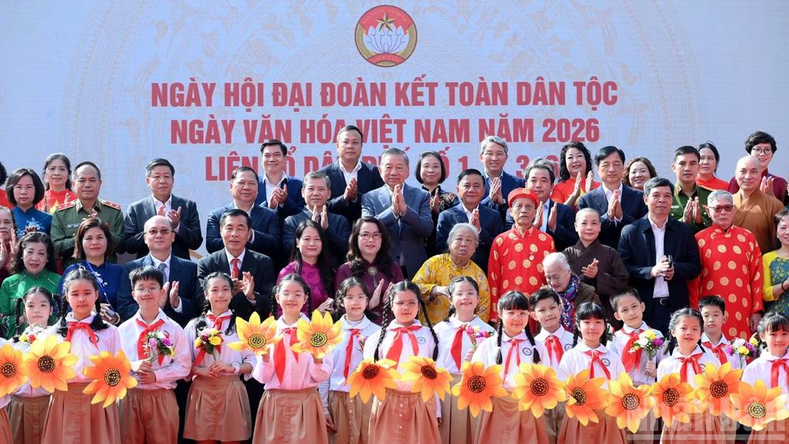
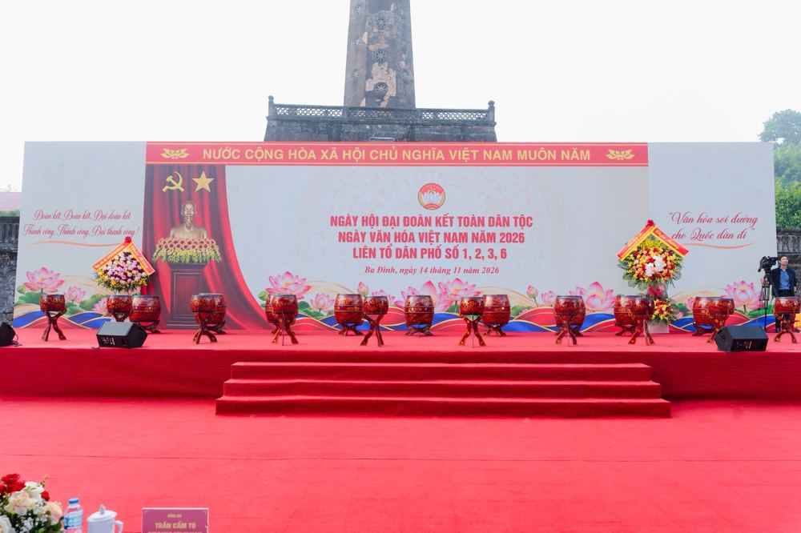
Tại ngày hội, các ban công tác Mặt trận Cụm 3 phát động phong trào thi đua năm 2027. Trước đó, các đại biểu đã tham gia nghi thức dâng hương, tham quan khu trưng bày sản phẩm truyền thống và thưởng thức các tiết mục biểu diễn dân vũ. Dịp này, các tập thể, gia đình, cá nhân tiêu biểu được biểu dương, khen thưởng; các hộ có hoàn cảnh khó khăn được trao tặng những phần quà ý nghĩa.
Tại Đình An Trí, Ngày hội có sự tham dự của đồng chí Lê Hải Bình, Ủy viên Trung ương Đảng, Phó Giám đốc Thường trực Học viện Chính trị quốc gia Hồ Chí Minh. Ngày hội đã biểu dương các gia đình văn hóa, cá nhân tiêu biểu trong chuyển đổi số, trẻ em vượt khó học giỏi. Ban Tổ chức đã trao tặng 30 suất quà tới các hộ gia đình có hoàn cảnh khó khăn. Đây là những phần quà ý nghĩa do đồng chí Nguyễn Thanh Hải, Ủy viên Ban Chấp hành Trung ương Đảng, Ủy viên Ủy ban Thường vụ Quốc hội, Chủ nhiệm Ủy ban Khoa học, Công nghệ và Môi trường; đồng chí Trương Việt Dũng, Thành ủy viên, Phó Chủ tịch UBND thành phố Hà Nội và phường Ba Đình gửi tặng.
Tại đình Ngọc Hà, Ngày hội mở đầu bằng nghi thức dâng hương tri ân các bậc tiền nhân. UBND phường biểu dương 33 gia đình văn hóa tiêu biểu, khen thưởng 10 cá nhân có thành tích trong công tác chuyển đổi số; trao 10 suất quà tặng các gia đình có hoàn cảnh khó khăn. VietinBank Chi nhánh Ba Đình trao 16 suất học bổng, mỗi suất trị giá 3 triệu đồng, tặng học sinh vượt khó học giỏi. Ngày hội khép lại bằng bữa cơm đại đoàn kết ấm áp, góp phần gắn kết cộng đồng, vun đắp tình làng nghĩa xóm.
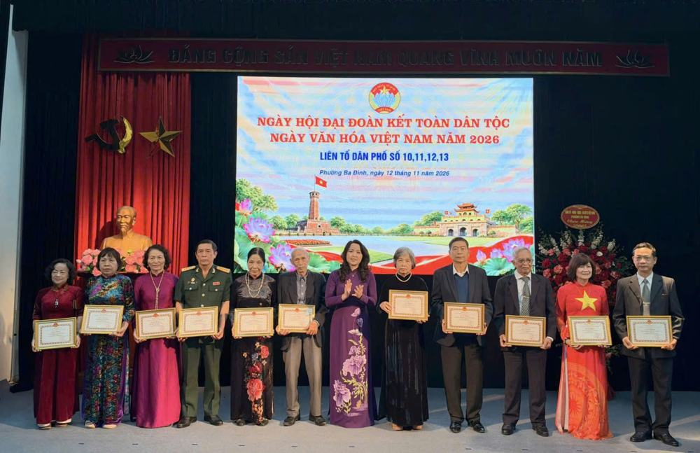
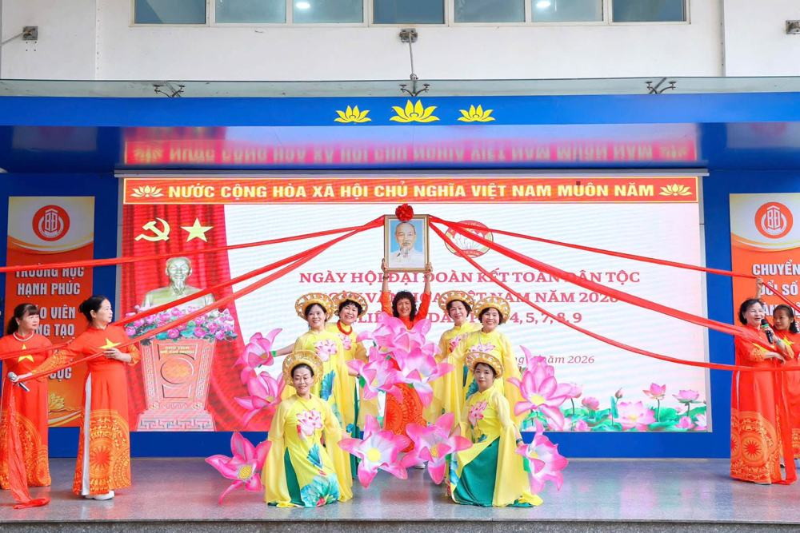
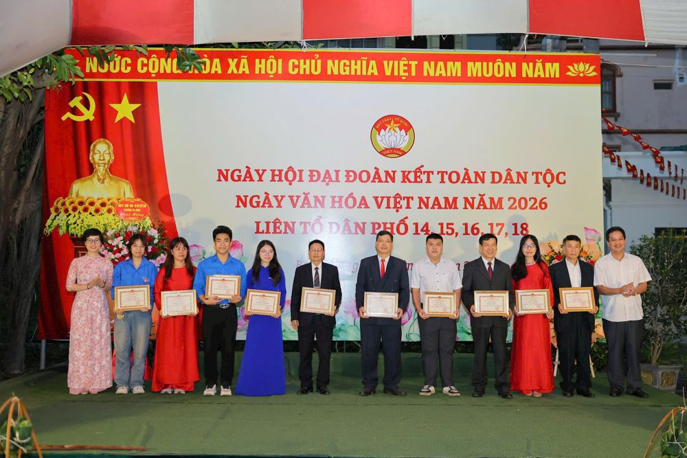
Sáng 20/11, tại Trung tâm Văn hóa, Thông tin và Thể thao phường, UBND phường tổ chức ra mắt mô hình “Thư viện mở”, nhân kỷ niệm Ngày Văn hóa Việt Nam (24/11).
Mô hình hướng tới xây dựng không gian đọc sách, giao lưu văn hóa, kết nối các nhà xuất bản, tác giả với bạn đọc; góp phần lan tỏa văn hóa đọc trong cộng đồng.
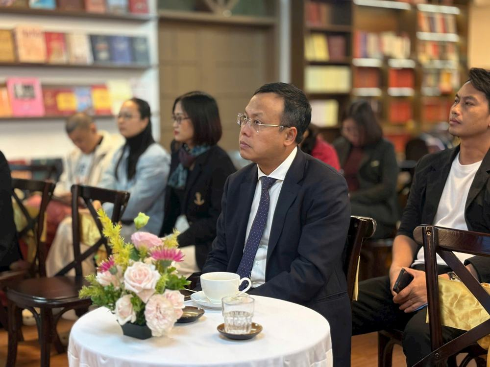
Ngày 23/11, UBND phường ra mắt mô hình điểm “Thiết chế văn hóa cơ sở Nhà sinh hoạt cộng đồng Tổ dân phố số 17” tại số 2, ngõ 158 Ngọc Hà. Mô hình vừa là điểm tổ chức hoạt động văn hóa cơ sở, vừa vận hành hỗ trợ chuyển đổi số ngay tại khu dân cư, đưa không gian văn hóa đến gần hơn với Nhân dân. Dự lễ ra mắt có đồng chí Võ Hồng Vinh, Ủy viên Ban Thường vụ Đảng ủy, Chủ tịch Ủy ban MTTQ Việt Nam phường; đồng chí Nguyễn Dân Huy, Đảng ủy viên, Phó Chủ tịch UBND phường cùng cán bộ và Nhân dân Tổ dân phố số 17.
Chi bộ, tổ dân phố phối hợp với Ban Công tác Mặt trận, các chi hội, đoàn thể sửa chữa hội trường, hệ thống cấp thoát nước; bố trí khu đọc sách, khu sinh hoạt chung và khu hỗ trợ chuyển đổi số. UBND phường bố trí kinh phí mua sắm máy tính, máy in, tivi, tủ sách và dụng cụ thể thao.
Thời gian tới, phường tiếp tục hoàn thiện mô hình, nghiên cứu nhân rộng ra các khu dân cư khác; kết nối đoàn viên, thanh niên, tình nguyện viên tham gia duy trì thư viện và hỗ trợ người dân sử dụng tiện ích số.
Ngày 22/11, Trung tâm Văn hóa, Thông tin và Thể thao phường tổ chức Giải Bóng rổ khối học sinh Tiểu học và THCS phường Ba Đình năm 2026, với sự tham gia của 150 vận động viên là học sinh các trường, phân hiệu trên địa bàn. Giải được tổ chức thường niên chào mừng Ngày Văn hóa Việt Nam (24/11), hưởng ứng Cuộc vận động “Toàn dân rèn luyện thân thể theo gương Bác Hồ vĩ đại”; góp phần nâng cao sức khỏe, rèn luyện tinh thần đồng đội, tính kỷ luật cho học sinh, xây dựng phường Ba Đình “Văn hiến - Văn minh - Hiện đại”.
Trong 02 ngày 4, 5/11/2026, Đảng ủy phường trang trọng tổ chức Lễ trao Huy hiệu Đảng đợt 7/11. Đây là dịp ghi nhận, tôn vinh những đóng góp bền bỉ của các thế hệ đảng viên đối với sự nghiệp cách mạng của Đảng, dân tộc và sự phát triển của phường. Trong đợt trao tặng Huy hiệu Đảng lần này, Đảng bộ phường Ba Đình có 365 đảng viên vinh dự được nhận Huy hiệu từ 30 đến 80 năm tuổi Đảng, trong đó có 293 đảng viên được nhận Huy hiệu 35 năm tuổi Đảng.
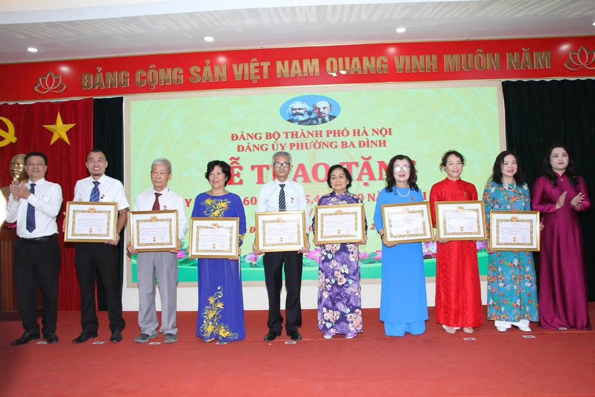
Đồng chí Phạm Quang Thanh, Ủy viên Ban Thường vụ Thành ủy, Bí thư Đảng ủy, Chủ tịch HĐND phường đã đến gia đình trao Huy hiệu 80 năm tuổi Đảng tặng đồng chí Nguyễn Thị Thành Nhân, đảng viên Chi bộ 3 và đồng chí Vũ Thị Kim Hoàng, đảng viên Chi bộ 11.
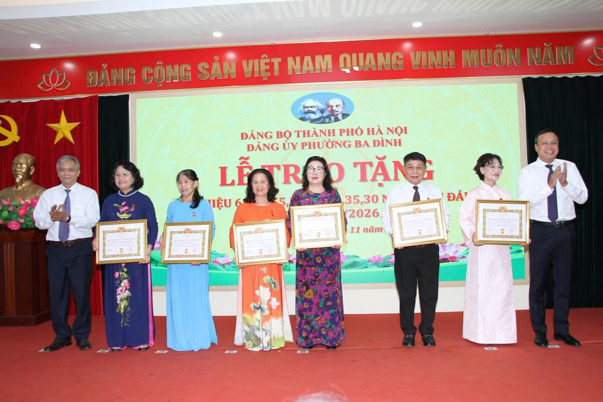
Sáng 6/11, Đoàn đại biểu Đảng bộ phường đã dâng hoa tại Tượng đài V.I.Lênin nhân kỷ niệm 109 năm Cách mạng Tháng Mười Nga (7/11/1917 - 7/11/2026).
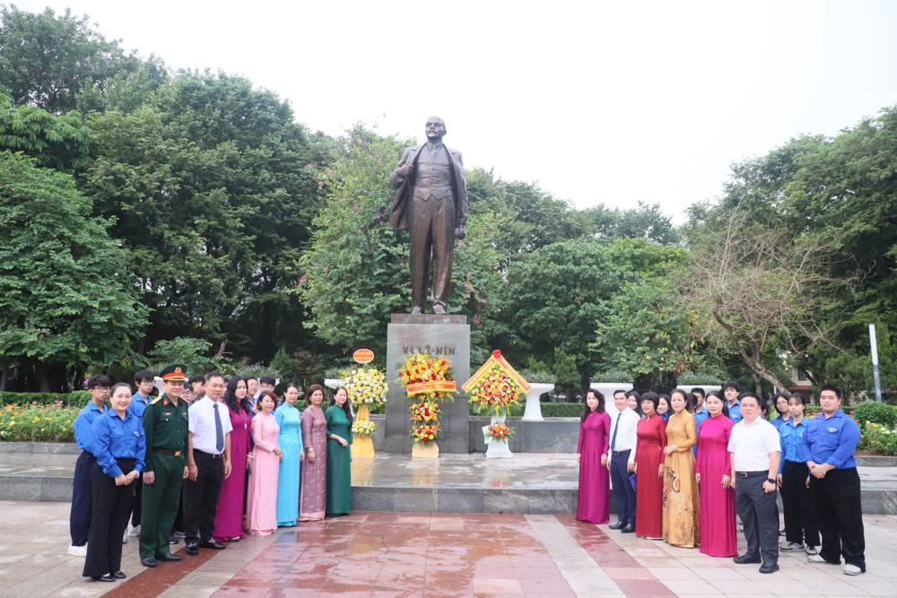
Tại đây, Đoàn đại biểu thành kính tưởng nhớ, tri ân công lao to lớn của V.I.Lênin - nhà lý luận chính trị kiệt xuất, vị lãnh tụ lỗi lạc của giai cấp công nhân và nhân dân lao động toàn thế giới; đồng thời nguyện tuyệt đối trung thành với chủ nghĩa Mác - Lênin, tư tưởng Hồ Chí Minh, đoàn kết, phát huy truyền thống cách mạng, xây dựng phường Ba Đình văn minh, hạnh phúc.
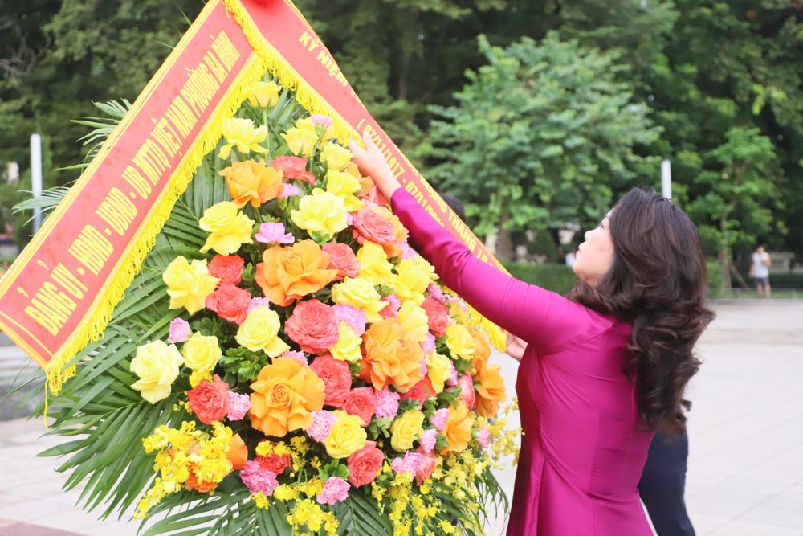
Sáng 18/11, Đảng ủy phường tổ chức Hội nghị học tập, quán triệt những nội dung cốt lõi, điểm mới trong các văn kiện Hội nghị lần thứ 4 Ban Chấp hành Trung ương Đảng khóa XIV tới đội ngũ cán bộ chủ chốt phường và toàn thể cấp ủy các đảng bộ, chi bộ trực thuộc. Tại hội nghị, các đại biểu được nghe báo cáo viên trao đổi những nội dung trọng tâm của Nghị quyết số 29, 30, 31; Quy định 224 và Kết luận số 105, 106 của Trung ương.
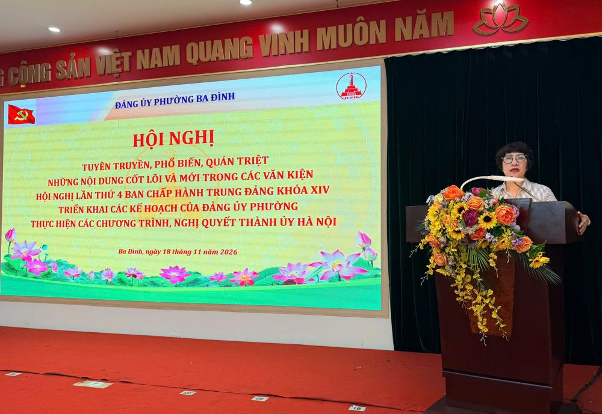
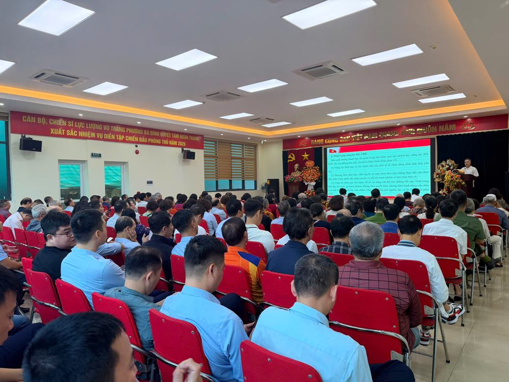
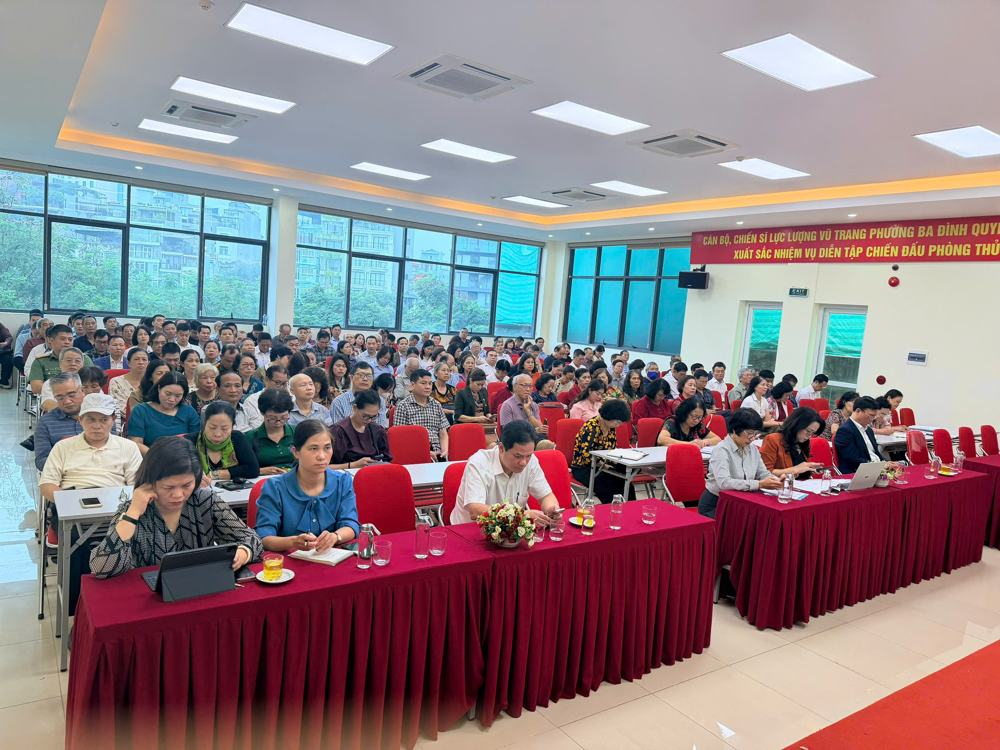
Thời gian qua, với tinh thần trách nhiệm cao, các đảng bộ, chi bộ đã hoàn thành cập nhật dữ liệu của 4.142 đảng viên, đạt tỷ lệ 99,78% trên phần mềm Sổ tay đảng viên điện tử. Ban Xây dựng Đảng phường tích cực phối hợp với các đơn vị đảm bảo hoàn thành 100% số hóa, cập nhật hồ sơ đảng viên trên phần mềm cơ sở dữ liệu đảng viên 4.0 của Trung ương, theo tiến độ chung.
Từ ngày 16 đến 27/11, Ban Thường vụ Đảng ủy phường đã chỉ đạo 10 đảng bộ, 34 chi bộ tổ dân phố và các chi bộ phòng, ban, ngành hoàn thành việc kiểm điểm, đánh giá, xếp loại chất lượng tổ chức đảng, đảng viên; tập thể, cá nhân cán bộ lãnh đạo, quản lý trong hệ thống chính trị phường.
Ủy ban MTTQ Việt Nam phường tổ chức khánh thành công trình sửa chữa nhà Đại đoàn kết cho gia đình ông Chu Văn Tuấn, tại số 11 ngõ Châu Long. Đồng chí Bùi Huyền Mai, Ủy viên Ban Thường vụ Thành ủy, Chủ tịch Ủy ban MTTQ Việt Nam thành phố Hà Nội đã về dự.
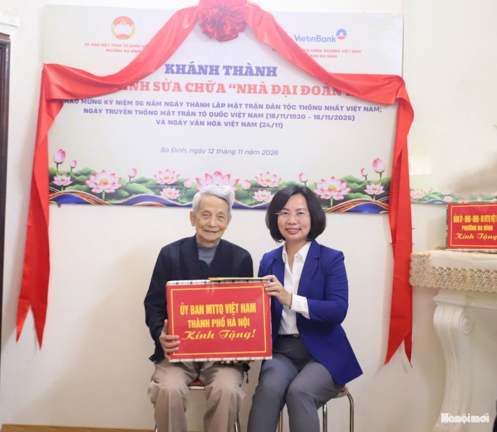
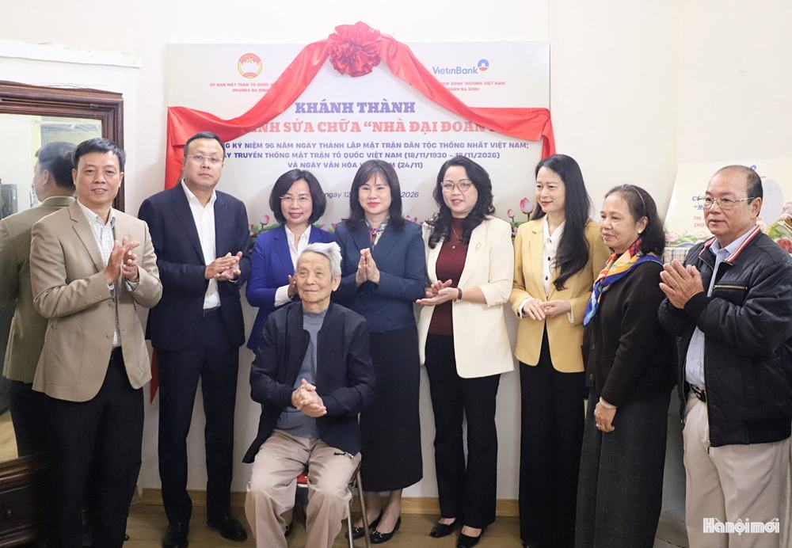
Công trình được triển khai với kinh phí khoảng 100 triệu đồng từ đơn vị đồng hành và hoàn thành sau hơn 10 ngày thi công, giúp gia đình ông Chu Văn Tuấn có nơi ở an toàn, khang trang, ổn định hơn.
Ngày 18/11, UBND phường đã tổ chức Lễ kỷ niệm 44 năm Ngày Nhà giáo Việt Nam (20/11/1982 – 20/11/2026), tuyên dương các điển hình tiên tiến, nhà giáo tiêu biểu năm 2026. Tại chương trình, các đại biểu cùng nhìn lại những kết quả nổi bật của ngành giáo dục phường qua phóng sự “Ba Đình - Dấu ấn một năm đổi mới và phát triển giáo dục”. Trong bối cảnh sắp xếp lại các cơ sở giáo dục, quy mô trường lớp, số lượng học sinh và phạm vi quản lý tăng, các nhà trường đã nỗ lực khắc phục khó khăn, ổn định tổ chức, duy trì nền nếp dạy và học.
Trường THCS Ba Đình (trước sắp xếp là Trường THCS Nguyễn Công Trứ) được UBND thành phố Hà Nội tặng Cờ thi đua.
Nhân dịp này, ngày 20/11, Đảng ủy, HĐND, UBND, Ủy ban MTTQ phường đã tổ chức 5 đoàn công tác đến thăm, tặng hoa và chúc mừng các trường học trên địa bàn. Đây là hoạt động thể hiện sự quan tâm sâu sắc của cấp ủy, chính quyền địa phương đối với sự nghiệp giáo dục và đội ngũ nhà giáo.
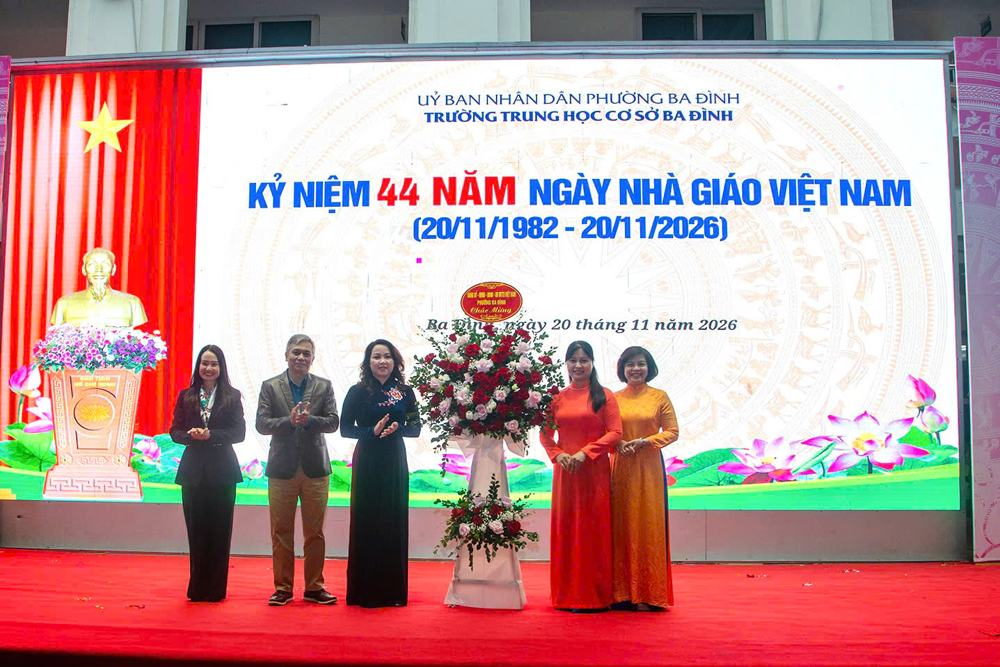
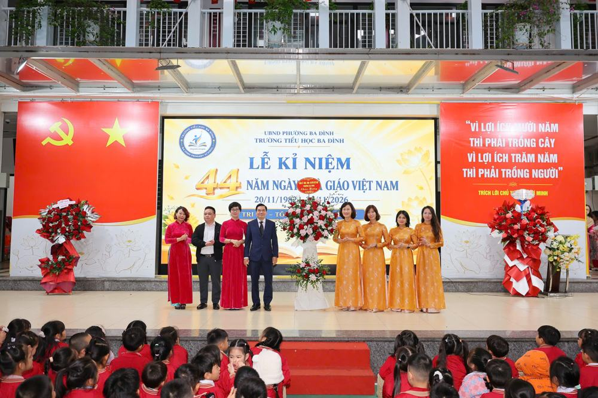
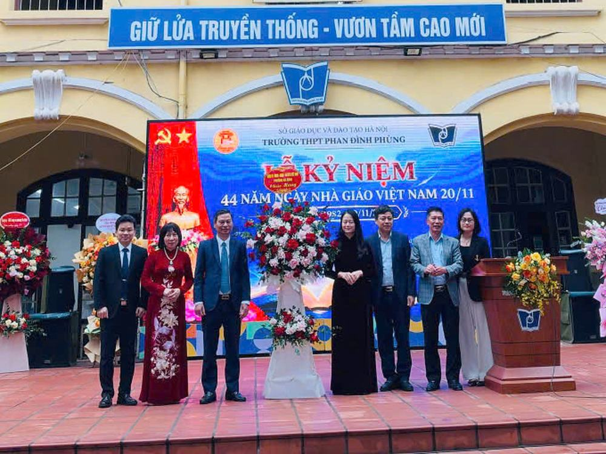
Ngày 29/10, UBND phường tổ chức Hội nghị phát động hưởng ứng thực hiện Quy tắc ứng xử, xây dựng người Hà Nội thanh lịch, văn minh; triển khai Cuộc thi trực tuyến “Văn hóa từ mỗi hành động” và ra mắt mô hình “Trường học thân thiện – Nói lời hay, làm việc tốt, cảnh quan đẹp” tại Trường Tiểu học Việt Nam - Cu Ba.
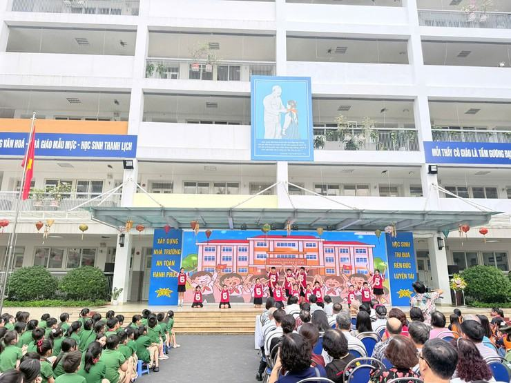
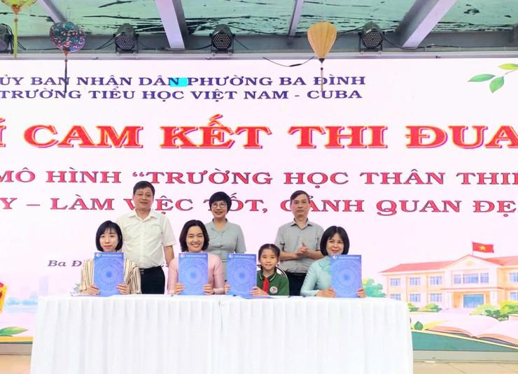
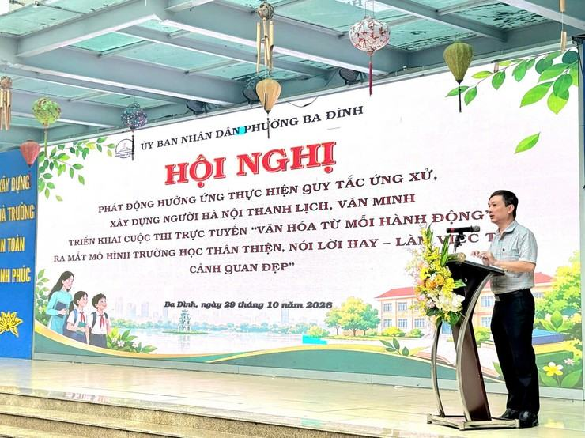
Đây là mô hình đầu tiên được phường lựa chọn triển khai thuộc chương trình thực hiện 10 mô hình gắn với Quy tắc ứng xử và xây dựng người Hà Nội thanh lịch, văn minh. Phấn đấu đến năm 2027, 100% trường học trên địa bàn tổ chức ra mắt mô hình.
Thực hiện Nghị quyết số 72-NQ/TW về chăm sóc sức khỏe Nhân dân, UBND phường đã chỉ đạo Trạm Y tế phường phối hợp với Bệnh viện Đa khoa Xanh Pôn, Bệnh viện Đa khoa Hòe Nhai triển khai đợt cao điểm khám sức khỏe định kỳ, khám sàng lọc miễn phí cho người dân trên địa bàn. Đồng thời, phường thành lập Tổ công tác rà soát, cập nhật dữ liệu, đôn đốc tiến độ thực hiện chỉ tiêu Thành phố giao.
Theo đánh giá của Sở Khoa học và Công nghệ Hà Nội, phường Ba Đình xếp thứ 11/51 phường trong đợt cao điểm 100 ngày thực hiện các nhiệm vụ trọng tâm về chuyển đổi số.
Tính đến ngày 13/11/2026, tổng thu ngân sách nhà nước trên địa bàn phường Ba Đình đạt 6.302,362 tỷ đồng, bằng 289,4% dự toán đầu năm theo chỉ tiêu Thành phố giao. Chi ngân sách phường đạt 486,845 tỷ đồng, bằng 94,2% dự toán đầu năm.
Qua rà soát, phường đã lựa chọn 599 công dân đủ điều kiện tham gia khám sơ tuyển sức khỏe nghĩa vụ quân sự năm 2027. Công tác sơ tuyển nhằm đánh giá sức khỏe ban đầu, nắm chắc nguồn công dân đủ điều kiện tham gia khám tuyển đợt 2, dự kiến tổ chức vào ngày 8/12/2026.
Trong thời gian tới, Phường tiếp tục triển khai chặt chẽ các bước trong quy trình tuyển chọn, gọi công dân nhập ngũ, bảo đảm đủ số lượng, nâng cao chất lượng, phấn đấu hoàn thành chỉ tiêu giao quân năm 2027.
Ngày 5/11, Công an phường tổ chức Hội nghị “Công an lắng nghe ý kiến Nhân dân” năm 2026 nhằm đánh giá tình hình an ninh, trật tự trên địa bàn; tiếp thu ý kiến đóng góp của Nhân dân về tinh thần trách nhiệm của lực lượng Cảnh sát khu vực.
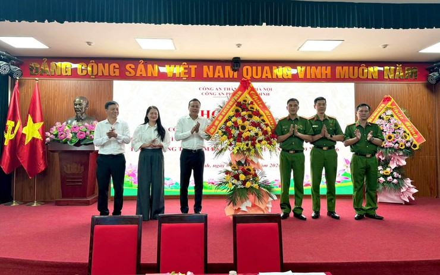
Thông qua hội nghị, Công an phường kịp thời nắm bắt tâm tư, nguyện vọng của Nhân dân, khắc phục những tồn tại, nâng cao chất lượng phục vụ; đồng thời tăng cường mối quan hệ gắn bó giữa lực lượng Công an với Nhân dân, góp phần giữ vững an ninh, trật tự tại cơ sở.
UBND phường đã chỉ đạo lực lượng Công an triển khai 14 phương án bảo đảm an ninh, an toàn các sự kiện chính trị, hoạt động đối ngoại, trọng tâm là bảo vệ Kỳ họp thứ Hai, Quốc hội khóa XVI.
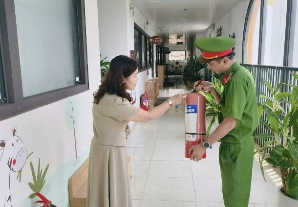
MTTQ phường triển khai nhiều hoạt động thiết thực nhân kỷ niệm 96 năm Ngày truyền thống Mặt trận Tổ quốc Việt Nam. Phối hợp với UBND phường triển khai kế hoạch liên tịch tổ chức Ngày hội Đại đoàn kết toàn dân tộc năm 2026; chỉ đạo 4 cụm liên tổ dân phố tổ chức Ngày hội Đại đoàn kết toàn dân tộc và Ngày Văn hóa Việt Nam. Trao 36 suất quà, tổng trị giá 36 triệu đồng từ Quỹ “Vì người nghèo” tới các gia đình có hoàn cảnh khó khăn trên địa bàn.
Phối hợp với Ngân hàng TMCP Công Thương Việt Nam - Chi nhánh Ba Đình tổ chức khánh thành nhà đại đoàn kết tại số 11 ngõ Châu Long. Tổ chức gặp mặt cán bộ Mặt trận phường nhân kỷ niệm 96 năm Ngày truyền thống Mặt trận Tổ quốc Việt Nam.
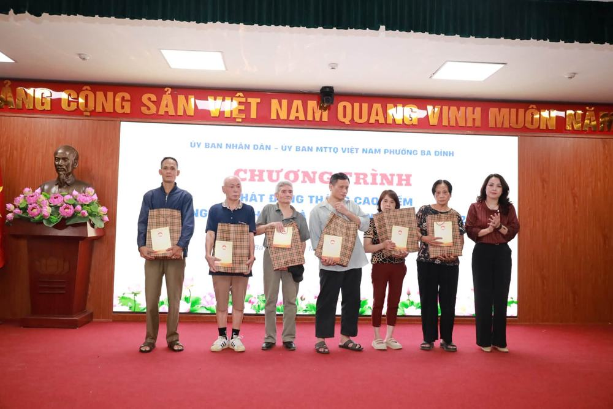
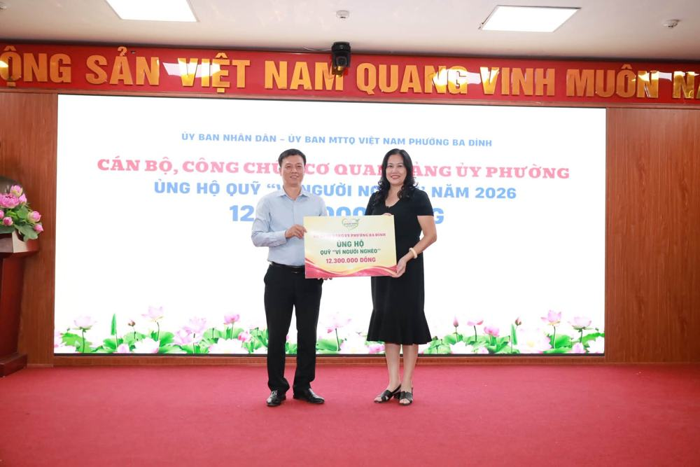
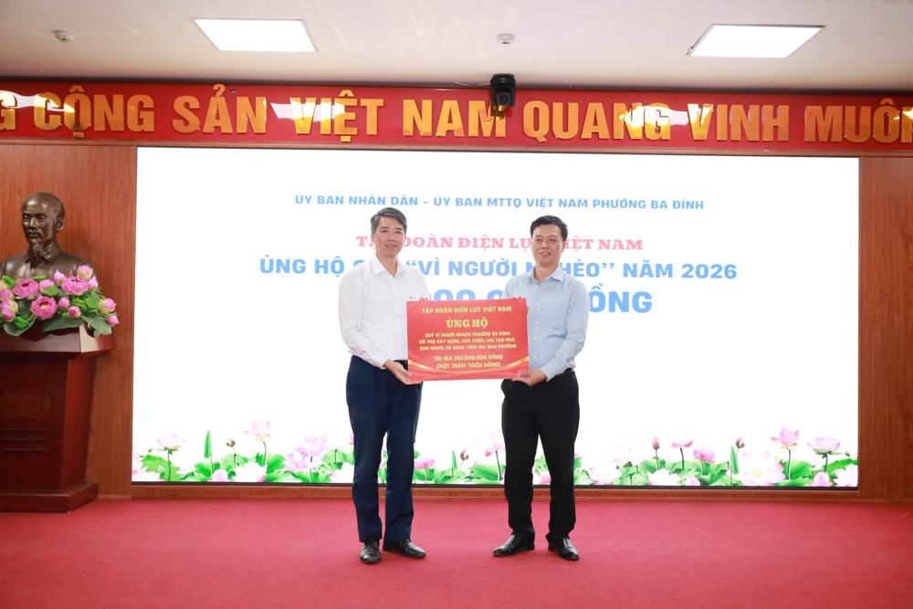
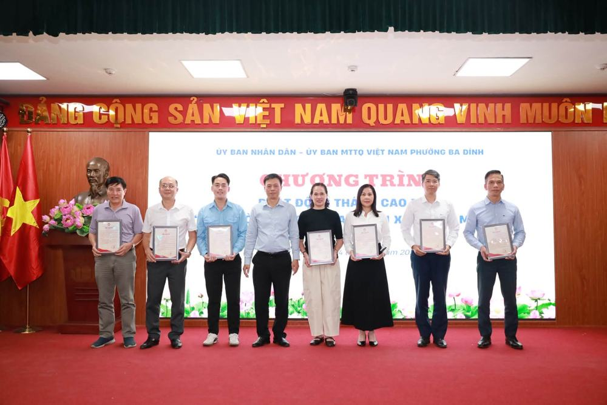
Hội LHPN phường hướng dẫn triển khai sáng kiến cộng đồng thuộc Dự án No-RB cho 60 cán bộ, hội viên; phối hợp với Sở Nông nghiệp và Môi trường tuyên truyền kiến thức quản lý chất lượng, sản xuất, kinh doanh bảo đảm an toàn thực phẩm cho 120 hội viên.
Hội giám sát việc thực hiện chính sách trợ cấp xã hội hằng tháng, hỗ trợ bảo hiểm y tế đối với người cao tuổi là hội viên phụ nữ; tích cực tham gia văn nghệ, giao lưu tại Ngày hội Đại đoàn kết toàn dân tộc và Ngày Văn hóa Việt Nam ở các cụm dân cư. Đồng thời, ra mắt ấn phẩm điện tử Phụ nữ Ba Đình tháng 11 với chủ đề “Sắc hoa Ba Đình - Lan tỏa văn hóa Việt”, góp phần đổi mới công tác tuyên truyền, lan tỏa giá trị văn hóa và hình ảnh phụ nữ Ba Đình năng động, trách nhiệm.
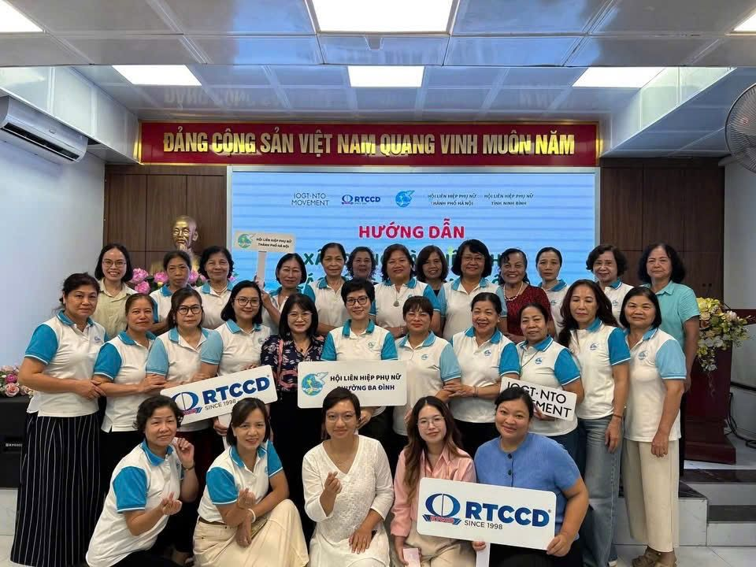
Thực hiện đợt thi đua cao điểm “90 ngày thành lập Công đoàn cơ sở mới”, đã thành lập được 33 Công đoàn cơ sở và được nhận Bằng khen của Liên đoàn Lao động Thành phố.
Tổ chức Lễ kỷ niệm 80 năm ngày thành lập Hội Chữ thập đỏ Việt Nam (23/11/1946 - 23/11/2026).
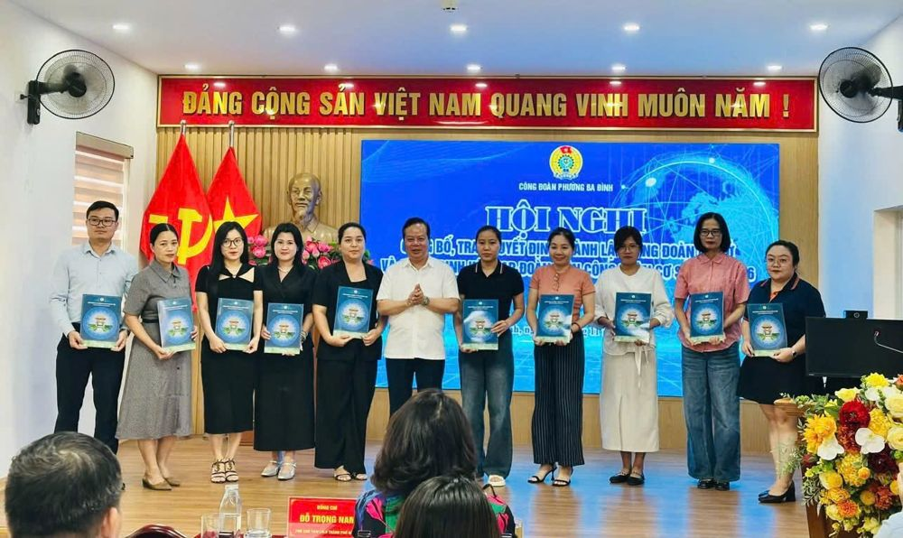
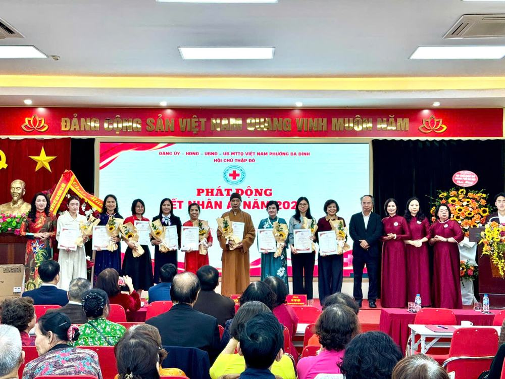
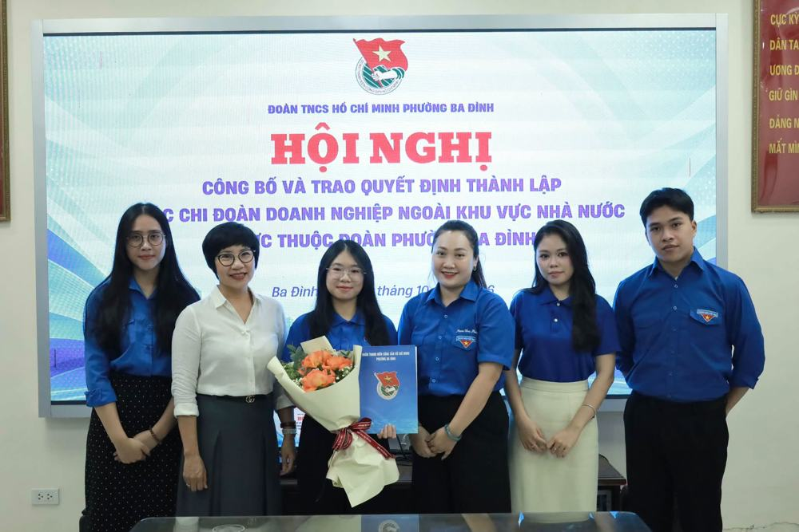
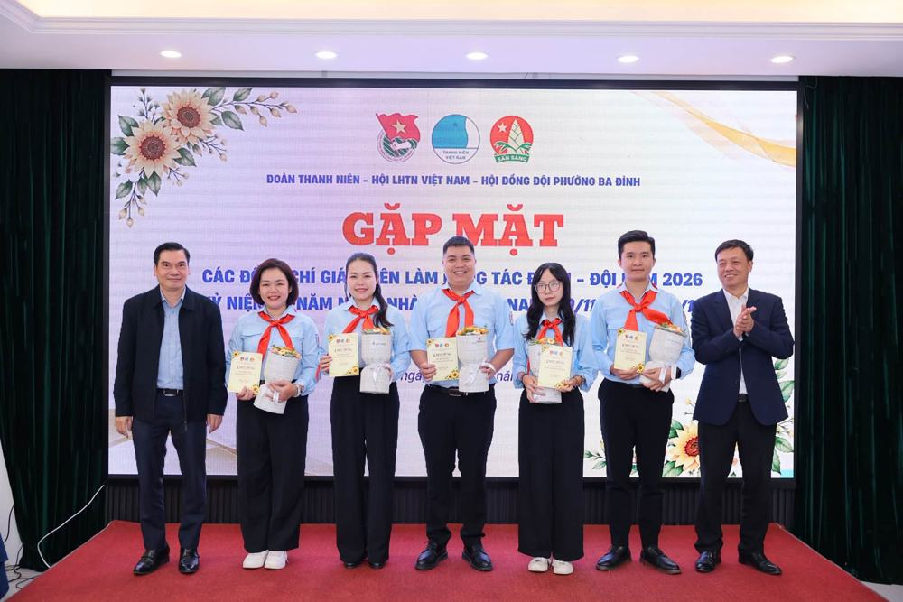
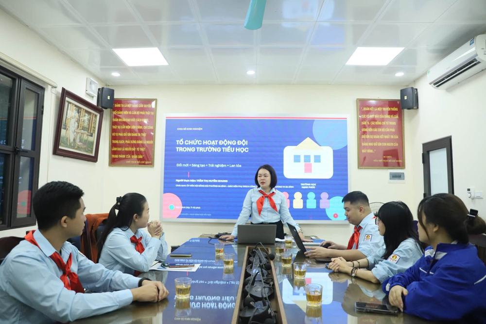
Dĩ bất biến ứng vạn biến
Phương pháp Hồ Chí Minh là sự kết tinh giữa tư duy khoa học, cách mạng với nghệ thuật lãnh đạo, tổ chức thực tiễn; được thể hiện qua 7 nội dung cốt lõi:
Mỗi cán bộ, đảng viên cần chủ động vận dụng phương pháp Hồ Chí Minh vào thực tiễn công tác, nói đi đôi với làm, nêu cao tinh thần trách nhiệm, lấy kết quả thực hiện nhiệm vụ và sự hài lòng của Nhân dân làm thước đo.
Trường Tiểu học Ba Đình tổ chức livestream “Tiết học kết nối” đăng tải trên fanpage UBND phường, với hai tiết học tiêu biểu: Tiếng Việt kết nối giữa các phân hiệu và Toán sử dụng tiếng Anh (Math in English).
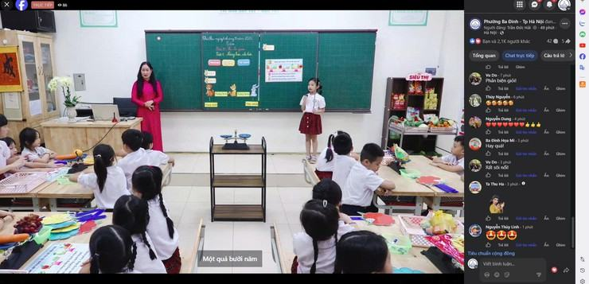
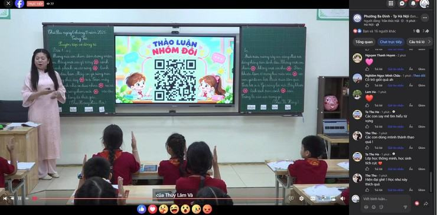
Thông qua ứng dụng công nghệ thông tin, học sinh tại các phân hiệu được kết nối trực tuyến, cùng tham gia hoạt động học tập, trao đổi kiến thức và tương tác với giáo viên. Chương trình góp phần đổi mới phương pháp dạy học, tăng cường tính đồng bộ, nâng cao chất lượng giáo dục trong mô hình trường học có nhiều phân hiệu sau sắp xếp.
Tổ chức tổng kết công tác xây dựng Đảng và thực hiện các nhiệm vụ chính trị năm 2026; xây dựng chương trình công tác năm 2027 của Đảng ủy, UBND phường và các cơ quan, đơn vị, đoàn thể. Hoàn thành việc đánh giá, xếp loại tổ chức đảng, đảng viên năm 2026; biểu dương, khen thưởng các tập thể, cá nhân có thành tích xuất sắc trong thực hiện nhiệm vụ.
Tổ chức các hoạt động thông tin, tuyên truyền, văn hóa, thể thao nhân kỷ niệm 80 năm Ngày Toàn quốc kháng chiến (19/12/1946 - 19/12/2026), 82 năm ngày thành lập Quân đội Nhân dân Việt Nam (22/12/1944 - 22/12/2026); 37 năm ngày truyền thống Hội Cựu chiến binh Việt Nam và tổ chức “Tháng nghe Cựu chiến binh nói”. Phối hợp tổ chức tốt các hoạt động trong khuôn khổ Lễ hội Thiết kế sáng tạo Hà Nội năm 2026 diễn ra trên địa bàn phường.
Tổ chức thành công kỳ họp lần thứ 4 (thường lệ cuối năm) HĐND phường khóa II, nhiệm kỳ 2026-2031.
Hoàn thành công tác khám sức khỏe Nhân dân năm 2026 theo chỉ đạo của Thành phố; chú trọng bảo đảm an toàn thực phẩm và chăm lo an sinh xã hội trong dịp Tết Dương lịch.
Giữ vững quốc phòng, an ninh và trật tự an toàn xã hội. Tiếp tục thực hiện các bước tuyển chọn, gọi công dân nhập ngũ và thực hiện nghĩa vụ tham gia Công an nhân dân năm 2027 theo kế hoạch.
Những điều tốt đẹp luôn được lan tỏa
để Ba Đình ngày càng tỏa sáng!